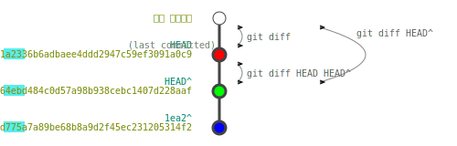

정보 조회
help
| 명령어 | 내용 | 설명, ($ 사용 예시), (> 출력 예시) |
|---|---|---|
| git | 도움말 | 현재 표(영문ver) |
| git -h, git --help | ||
|
git help tutorial, git help everyday, git help revisions |
컨셉에 맞는 안내문 출력 | |
| git -v, git --version | 버전확인 | > git version 2.38.1.windows.1 |
| git -C <path> | 작업 디렉토리 변경 | 특정 디렉토리 상태 조회 $ git -C /path/to/repo status |
| git -c <name>=<value> git --config-env=<name>=<envvar> |
설정값 변경 | 작성자 변경 $ git -c-env GIT_AUTHOR_NAME="Temporary Author" |
| git --exec-path[=<path>] | Git 실행(설치) 경로 출력 | > C:/Program Files/Git/mingw64/libexec/git-core |
| git --html-path | 각각의 설명서 경로 | > C:/Program Files/Git/mingw64/share/doc/git-doc |
| git --man-path | > C:/Program Files/Git/mingw64/share/man | |
| git --info-path | > C:/Program Files/Git/mingw64/share/info | |
| git -p, --paginate git -P, --no-pager |
페이저(vi 편집기) 사용 여부 |
편집기 없이 모두 출력 $ git --no-pager log |
| git --no-replace-objects | 대체객체 사용 안함 | $ git --no-replace-objects checkout HEAD -- <file> |
| git --bare | 작업디렉토리 없이 작업 | (주로 서버repo에 설정) |
| git --work-tree=<path> | 작업트리 변경 | $ git --work-tree=/path/to/working-directory status |
| git --namespace=<name> | 네임스페이스 변경 | $ git --namespace=my-namespace rev-parse HEAD |
| git --super-prefix=<path> | 슈퍼접두사 변경 | $ git --namespace=my-namespace rev-parse HEAD |
| git --upload-pack=<path> | 업로드팩 변경 | $ git fetch --upload-pack=/custom/path/git-upload-pack origin |
| git --git-dir=<path> | git디렉토리 변경 | $ git --git-dir=/path/to/repo/.git log |
| git <command> [<args>] | [표. git command] 참조 | |
log
git log 예제git log --since="2023-01-01" 2023년 1월 1일 이후의 commit 검색
git log abc1234..HEAD abc1234 해쉬 이후의 commit 검색(abc1234제외)
git log abc1234^..HEAD abc1234 해쉬 이후의 commit 검색(abc1234포함)
git log -5최근 5개 검색
git log --grep="bug fix"commit log에 "bug fix"가 있는 commit검색
아래 시나리오에서:
- HEAD = b722d1a2336b6adbaee4ddd2947c59ef3091a0c9 = b722(최소 4개 이상)
- 1ea2064ebd484c0d57a98b938cebc1407d228aaf = 1ea2 = HEAD^ = b722^
- 04b12d775a7a89be68b8a9d2f45ec231205314f2 = 04b1 = 1ea2^
C:\myProject> git log 04b1^..HEAD commit b722d1a2336b6adbaee4ddd2947c59ef3091a0c9 (HEAD -> master) Author: iseohyun <iseohyun@hanmail.net> Date: Sat Dec 28 05:23:21 2024 +0900 rm 03_Shebang.py commit 1ea2064ebd484c0d57a98b938cebc1407d228aaf Author: iseohyun <iseohyun@hanmail.net> Date: Sat Dec 28 05:22:34 2024 +0900 update filelist commit 04b12d775a7a89be68b8a9d2f45ec231205314f2 Author: iseohyun <iseohyun@hanmail.net> Date: Sat Dec 28 05:22:02 2024 +0900 add filelist.txt
diff
diff 명령을 통해 두 버전commit간의 차이를 알 수 있습니다.
git diff 예제git diff작업디렉터리와 HEAD와의 차이점을 출력합니다.
git diff HEAD^작업디렉터리와 HEAD 바로 이전 commit과의 차이점을 출력
git diff HEAD HEAD^HEAD와 HEAD 바로 이전의 차이점 출력
git diff --file-only변경된 파일명만 나열

git-diff
"git-diff.svg", iseohyun.com, CC-BY-SA
파일 1개(03_Shebang.py)를 삭제한 뒤, diff를 실행
C:\myProject> rm .\03_Shebang.py C:\myProject> dir > .\filelist.txt C:\myProject> git status On branch master Changes not staged for commit: (use "git add/rm..." to update what will be committed) (use "git restore ..." to discard changes in working directory) deleted: 03_Shebang.py modified: filelist.txt no changes added to commit (use "git add" and/or "git commit -a") C:\myProject> git add . C:\myProject> git commit -m "rm 03_Shebang.py" [master b722d1a] rm 03_Shebang.py 2 files changed, 4 deletions(-) delete mode 100644 03_Shebang.py C:\myProject> git diff HEAD^ diff --git a/03_Shebang.py b/03_Shebang.py deleted file mode 100644 index 0ca3c66..0000000 --- a/03_Shebang.py +++ /dev/null @@ -1,4 +0,0 @@ -#!/usr/bin/env python3 -# Shebang (#!, 셔뱅): 유닉스 계열 운영체제에서 실행되는 스크립트 - -print("Shebang(#!)은 첫 줄에 들어갑니다.") diff --git a/filelist.txt b/filelist.txt index c172c63..59b5a81 100644 Binary files a/filelist.txt and b/filelist.txt differ
grep
grep 명령을 통해 모든 파일중에서 특정 문자열을 검색할 수 있습니다.
| 명령어 예시 | 해설 |
|---|---|
| git grep "TODO" | 모든 파일에서 "TODO"를 검색 |
| git grep "TODO" src/ | src/ 에서 "TODO"를 검색 |
| git grep "TODO" main | main branch에서 "TODO"를 검색 |
| git grep "TODO" 78845b9 | 78845b9 commit에서 "TODO"를 검색 |
| git grep -e "TODO" -e "FIXME" | "TODO" 또는 "FIXME"를 검색 |
| git grep -l "TODO" | 파일명만 출력 |
| git grep -n "TODO" | 라인번호 출력 |
| git grep --exclude-standard "TODO" | .gitignore을 제외하고 "TODO"를 검색[문제해결: 파일 제외하기 참조] |
| git grep -C 2 "TODO" | 앞뒤로 2줄까지 출력(Context:문맥) |
show
show 명령을 통해 object의 정보(commit, file)를 출력 할 수 있습니다.
git show HEAD 최근 commit 정보 출력
git show tag tag 정보 출력
git show hash object 정보 출력
파일구조
scnario3.structure아래 그림과 같이 .git 디렉토리에는 저장소의 모든 정보가 저장되어 있습니다.
- object의 종류는 blob, tree, commit, tag가 있습니다.
- refs/heads/ 로부터 가장 최근의 commit을 가리키는 HEAD 파일이 있습니다.
- commit은 parent commit의 해시값과 tree object의 해시값을 가지고 있습니다.
- tree object는 blob object와 tree object를 가리키는 정보를 가지고 있습니다.
 파일구조
"git-tree.svg", iseohyun.com, CC-BY-SA
파일구조
"git-tree.svg", iseohyun.com, CC-BY-SA
https://github.com/iseohyun/git-tutorial.git의 structure를 살펴보면 다음과 같습니다.
.git 분석 예시
.git/refs/heads/master -> "d608c5..." .git/objects/d6/08c5... -> commit : "tree b5c012... parent 5cc5bd... ...(commit info)" .git/objects/b5/c012... -> tree : . 100644 blob f6fcee... all_files.txt 100644 blob 937ee7... all_object.txt 100644 blob 6a5d71... data1.bin 100644 blob 2484e3... hello_world.py 040000 tree d3a9e2... src ++++++++++++ 재사용 ++++++++++++ 100644 blob 861ef2... struct.txt 5cc5bd... .git/objects/5c/c5bd... -> commit : "tree f330a3... ...(commit info)" .git/objects/f3/30a3... -> tree : . 100644 blob 6a5d71... -> blob : data1.bin 100644 blob 00950d... -> blob : print('hello_world.py') 040000 tree d3a9e2... .git/objects/d3/a9e2... -> tree : ./src 100644 blob 6e39da... -> blob : filelist.txt 100644 blob 8bb656... -> blob : source.data
git log
C:\git-tutorial\structure> git log commit d608c5b1c6cbbf3dc4e97df5d38b94cd480aac28 (HEAD -> master) Author: iseohyun <iseohyun@hanmail.net> Date: Sun Dec 29 20:32:15 2024 +0900 new commit commit 5cc5bd48ee208c668e5ef57de965641ddbcdfa65 Author: iseohyun <iseohyun@hanmail.net> Date: Sun Dec 29 20:09:37 2024 +0900 first commit
조회 방법
아래 명령어를 통해 모든 object를 조회할 수 있습니다.
git rev-list --all --objects
조회된 object의 해시값을 통해 object의 내용을 확인할 수 있습니다.
git cat-file -p object_hash
동봉된 py 또는 powershell script를 통해 object의 내용을 확인할 수 있습니다.
print-obj.ps1, print-obj.py
스크립트 수행 예시
Hash Type File Name ----------------------------------------------------------- d608c5b1c6cbbf3dc4e97df5d38b94cd480aac28 commit (no file) 5cc5bd48ee208c668e5ef57de965641ddbcdfa65 commit (no file) b5c012807e706ba20aebb4e48b029ae10d2817f9 tree f6fcee0ba4034a631b8c074af61053449dd7197c blob all_files.txt 937ee706ca07804619ae9ec79dfbe3bc4b626e9b blob all_object.txt 6a5d7143202d163bd88466e1d1582dfc796409eb blob data1.bin 2484e3aafa7c1e0e033082265a24674404096a04 blob hello_world.py d3a9e29f4aa2d93cf19c9cbb506dcf18fb3f7b15 tree src 6e39dad2f1d91e49bada65481fb6acfb30735222 blob src/filelist.txt 8bb6564fba2e5db883bbaefa432d24978ddcd830 blob src/source.data 861ef265d8155a73d52c7731cfa7d8574790771f blob struct.txt f330a32d3cb1e6e5453dbc829a9ae41f0175fe71 tree 00950d9ac57ceeabf45f9120c2615199746d35fb blob hello_world.py